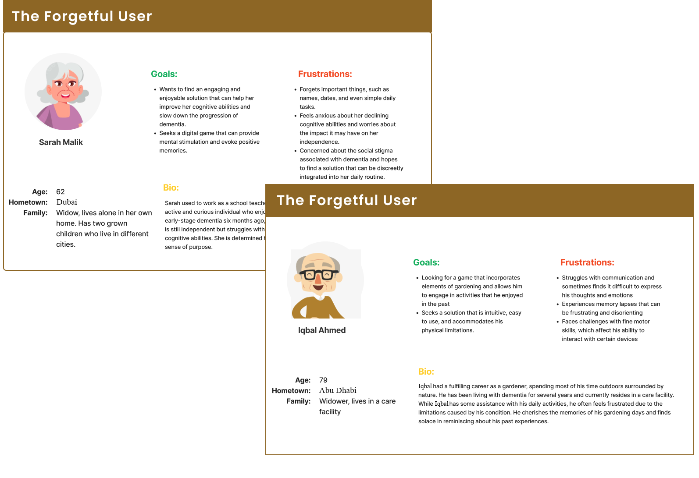

Dementia Match
A gamified, memory-based product that aims to improve cognitive ability in people with Dementia.
Overview
The increasing prevalence of dementia, accounting for nearly 10 million cases annually, has significantly affected healthcare systems and cognitive decline treatments. In response, HCI professionals have concentrated on crafting assistive technologies to aid individuals with dementia in their daily routines and curbing further cognitive deterioration. To assist with this problem we designed a memory-based game. The game leverages cultural cues to prompt users to reminisce and recognize images, rekindling their memories. Initial trials involving neurotypical participants have been promising, paving the way for upcoming tests with dementia patients to assess the technology's efficacy in assisting cognitive functions.
Role: Team Lead
Tools & methods: Unity, Google Forms, Adobe Creative Suite, Research Interviews, Usability Testing
Team: HCI Research Project at LUMS (3 team members)
Timeline: 4 months (Feb 2021 - May 2021)
Toolkit
The Problem
“How to design a digital solution for Improving Cognitive Ability in People with Dementia?”
Globally, more than 50 million individuals are affected by dementia, which can manifest as anything from mild cognitive issues to Alzheimer's disease. Despite being a major cause of cognitive decline in the elderly, there's a significant gap in treatment. High costs and reliance on caregivers mean that governments often prioritize delaying symptoms to reduce the load on care facilities. Although there's been a recent rise in assistive technologies in healthcare, they haven't consistently embraced user-centered methods.
The Process
User Research
1. Conducted a literature review of existing solutions:
- Explored digital games on various platforms like Wii, PlayStation, and PC.
- Researched game marketing, user feedback, and effectiveness in enhancing muscle memory.
- Examined games tailored for seniors.
- Examined existing work on gamification for dementia.
2. Documented key findings from the literature review:
- Practical technology: Tablets and smartphones are ideal for gamified therapy for elderly individuals with dementia.
- Design considerations: Incorporating physical and cognitive aspects for easy input on mobile devices.
- Biography-oriented activities: Utilizing music and art style for positive connections with past experiences and memories.
3. Developed user personas to embody target users' characteristics and aspirations. Personas facilitated a deeper understanding of user needs and preferences.
4. Ideated and drew sketches for visualization. This helped in fostering discussions and iterative enhancements.
5. Iterated sketches, which led to a strong design foundation, ensuring a user-centered and purpose-driven final design.
Storyboards

User Personas
Design Prototype
Armed with a deeper understanding of our users' needs, we proceeded to ideate and generate low-fidelity prototypes. These prototypes acted as visual representations of potential design concepts, providing a tangible basis for our brainstorming sessions.
Lo-Fi Prototypes
We explored various approaches to tackle the awareness situation effectively, seeking ways to incorporate engaging elements that could address cognitive decline, and use familiarity to invoke memories. To achieve the optimal game design based on our study, we ideated 3 designs. All of these designs targeted different ways to aid with cognitive decline. The 3 prototypes included:
Dementia Match: A simple picture identification game to be built on the concept of triggering your cognition through memory recall.
Memory Cook: A basic cooking game where a user completes a guided process repeatedly, with increasingly less guidance until they can do it completely on their own
Backyard Cards: A card-based gardening game where a user manages, grows, and harvests their garden. The landscapes inside the game will be inspired by a Middle-Eastern setting.
Following are the 4 prototype screens: (Left to Right: Dementia Match, Memory Cook, Backyard Cards 1 and 2):
Game Development
The development process followed a highly iterative approach, encompassing key elements of agile development. Emphasis was placed on the codebase's scalability and modularity, facilitating easy alteration of various gameplay mechanics. For audio, Cubase 6.0 was chosen as the primary Digital Audio Workstation (DAW), enabling the incorporation of both external sources and original compositions. The visual design revolved around elements familiar to UAE residents, our target users. This entailed careful selection of a color palette, adherence to music theory, and inclusion of culturally relevant references within the game. Across all games, a competitive edge was introduced through elements like points, countdown timers, or score bonuses.
Hi-Fi Prototypes
Testing
Based on the results obtained, we identified a suitable matching game that involves memory recall and cultural understanding of the Middle East. The testing results indicated the following:
1. Improvement in reaction time as players went through the levels.
2. Influence of audio-sensory information on participant focus. Several participants commented on the lack of options to adjust volume, which they believed impacted their focus.
3. Another major takeaway was user retention. Several participants indicated that the game became repetitive or wasn’t challenging enough, possibly due to a limited number of rounds and themes. An iterative mechanism that adjusts the difficulty level according to the user’s reaction time and performance would be a good solution.
However, a significant limitation of the study was that testing participants were not dementia patients but neurotypical individuals. Therefore, we can not claim the game’s effectiveness in preventing cognitive decay for patients. However, we were still able to find common issues
A time graph was plotted using the user’s data, revealing that users had a decreased reaction time as they played the game. We detected outliers, and the issues, which included a lack of familiarity with the Arab culture, were addressed. To account for the ease of recall through repetition, we ensured that each game cycle used different themes. The results were overwhelmingly positive.
Self Reflection
This marked my second venture into designing for assistive health technologies. Along this journey, I encountered several challenges in designing for a user base unfamiliar with such solutions. Moreover, a target audience from a different cultural background made me understand how solutions might vary based on their context. This experience led me to some valuable insights, including an important mindset shift from aesthetics to accessibility as a priority. It also expanded my perspective on defining essential directional cues, and recognizing the role of accurate user group testing during every phase of ideation.